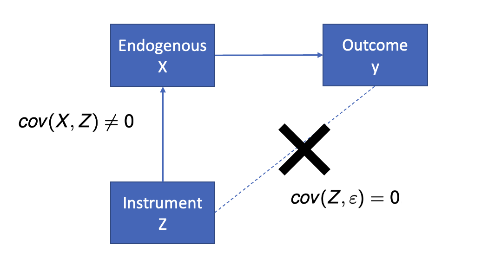

Class 16 Instrumental Variables
1 Instrumental Variable
1.1 Causal Inference from OLS
The necessary condition for OLS to reveal causal effect is: all confounding variables (i.e., variables that are correlated with \(X\) and affect outcome variable) are controlled in the regression.
Otherwise, the OLS estimator will be biased and we can only obtain the total effect (correlation) rather than the direct effect (causal effect).
From secondary data, we will never be able to control all confounding factors, which means we can never obtain causation from OLS regressions.
So, is there still a way for us to obtain causal inference from secondary data?
1.2 What is an Instrumental Variable
1.2.1 Instrumental Variable
An instrumental variable is a variable \(z\) that satisfies two requirements:
\(z\) is uncorrelated with \(\epsilon\); that is, \(cov(z,\epsilon) = 0\)
\(z\) is correlated with \(x\); that is, \(cov(z,x) \neq 0\)
Point 1 is called exogeneity requirement: the instrumental variable should be beyond an individual’s control, such that the instrumental variable will not be correlated with any individual’s choices/omitted variables.
- The spirit is similar to RCT’s randomization
Point 2 is called relevance requirement: though beyond an individual’s control, the instrumental variable should still affect the individual’s \(X\), causing some exogenous variations in \(X\).
1.3 Graphical Illustration of IV

1.4 A Classic Example of Instrumental Variable
Return of Military Service to Lifetime Income1
\[ Income = \beta_0 + \beta_1MilitaryService + \epsilon \]
OLS suffers from endogeneity problems, for example
- individual ability correlates with military service and affects income
- individual health status correlates with military service and affects income
A draft lottery was used to determine if a soldier with a certain birthday goes to the war.
The date of birth (\(z\)) is an instrumental variable
- is correlated with military service: \(cov(z,x) \neq 0\)
- but does not directly affect income: \(cov(z,\epsilon) = 0\)
1.5 IV Requirement I: Exogeneity
- Exogeneity requires that \(z\) should only affect \(Y\) through \(X\), but not directly affect \(Y\).
- The instrumental variable should be beyond an individual’s control. Because omitted variable bias is often caused by individual’s own selection, instrumental variables are thus not correlated with omitted variable bias.
1.6 IV Requirement II: Relevance
- The instrumental variable must be sufficiently correlated with \(x\).
- If the correlation between \(z\) and \(x\) is too small, we have a weak IV problem.
- For more mathematical details of the weak IV issue, refer to this resource.
1.7 More Examples of IVs
Can you come up with IV candidates for the following causation questions?
- COVID-19 cases => Uber Driver Supply
- new cases from neighboring cities
- new cases from overseas
- Number of restaurants on UberEat => Number of orders on UberEat
- close down of restaurants due to government inspections
- Retail price => Sales
- wholesale price
- costs of raw materials
- COGS
- Hausman instruments: the prices of the same product in other markets
2 Two-Stage Least Square
2.1 Solving Endogeneity Using IV
- Given an endogenous OLS regression,
\[ y_{i}=X_{i} \beta+\varepsilon_{i}, \quad \operatorname{cov}\left(X_{i}, \varepsilon_{i}\right) \neq 0 \]
- Find instrumental variables \(Z_i\) that do not (directly) influence \(y_i\) , but are correlated with \(X_i\)
2.2 Two-Stage Least Squares: Stage 1
- Run a regression with X ~ Z. The predicted \(X\) is predicted by Z, which should be uncorrelated with the error term \(\epsilon\).
- \(\hat{X}\) (predicted \(X\) from \(Z\)) is exogenous, because \(Z\) is exogenous
- All endogenous parts are now left in the error term in the first-stage regression \(\epsilon_{i}\)
\[ X_{i}=Z_{i}\eta+\epsilon_{i} \]
2.3 Two-Stage Least Squares: Stage 2
- Run a regression with \(Y\) ~ \(\hat{X}\): now \(\hat{X}\) is uncorrelated with the error term and thus we can get causal inference from the second stage regression.
\[ y_{i}=\hat{X} \beta+\varepsilon_{i}, \quad \operatorname{cov}\left(\hat{X}_{i}, \varepsilon_{i}\right) = 0 \]
3 Application: Causal Effects of COVID-19
3.1 Causal Impact of COVID-19
The COVID-19 pandemic has brought unprecedented disruptions to many industries, and platform businesses, especially sharing economy platforms, are among the most disrupted ones.
A common data science interview question: how would you evaluate causal impact of COVID-19 on the company’s business and profits?
Can we collect data on the COVID cases and KPI measures, and run an OLS regression to get the causal effect? \(KPI\) ~ \(NumCovid\)
What would hinder us from causal inference from the above OLS regressions?
3.2 Causal Impact of COVID-19 on UberEat Delivery Drivers’ Labor Supply
In this case workshop, we will see an application of instrumental variable in evaluating the causal impact of COVID-19 on UberEat delivery drivers’ labor supply decision.
Let’s take out the Quarto document.
3.3 Beyond the Impact of COVID-19 on Labor Supply
You can follow this case study and propose similar topics for your term 3 dissertation project, depending on the company you work with.
The causal impact of COVID-19 on Uber/Bolt drivers’ labor supply
The causal impact of COVID-19 on customer demand for offline shopping
etc.
For similar causal inference interview questions/data science tasks, when RCTs are difficult to implement, instrumental variable method can be a very powerful solution.
3.4 After-Class Readings
Footnotes
Angrist, Joshua D., Stacey H. Chen, and Jae Song. “Long-term consequences of Vietnam-era conscription: New estimates using social security data.” American Economic Review 101, no. 3 (2011): 334-38.↩︎